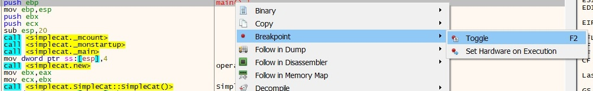
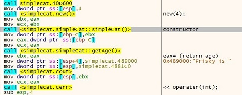
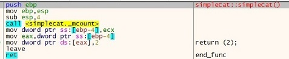
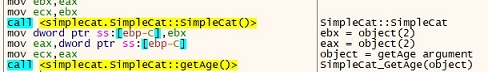
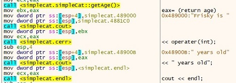
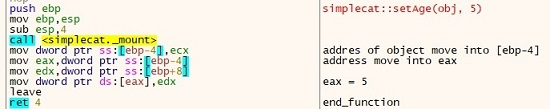
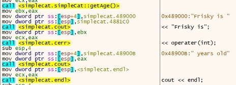
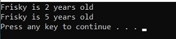

The objective of this blog post is to learn debugging while also understanding C++ classes and objects using the x64dbg Debugger. The executable we will be debugging is a fairly simple C++ program displaying two strings to the console.
The main methodI load the program into x64dbg and find the main method. I go through the code labelling the functions allowing for better understanding of what is going on.
Setting a breakpoint on the main method and running the program, we can now proceed to go through the program step by step.
As we enter the main method we can see a new operator is used to allocate memory on the heap, in this case its four bytes. The simpleCat constructor is than called.
 The simpleCat constructorWe can look at the constructor more closely here, when we enter it.
In the simpleCat constructor we can see the address of the object (in ecx) is placed into a local variable in this case is [ebp-4]. The value of [ebp-4] (address) placed into eax. The int value of 2 is placed into the address that eax holds. We exit that function and now enter the main method again.
The object is returned in ebx, the object itself is a hexadecimal address but at that address hold’s the value of 2. The object address is passed down to the next function which is simpleCat::getAge().
The simpleCat::gettAge() function
This function again places the object address into [ebp-4] on the stack. The address again is place into eax. Then the contents of [eax] which is 2 is placed into eax. We than exit this function back into the main method.
Display functionsAnalysing the code I can see a lot of print statements and output to the console. I label these statements and run through the code.
Looking at the code we have a load of print statements, ending with an end line statement. The next assembly instructions are setting up for the next function, the function is going to set the age now to five. Two arguments are being passéd to the function the object and the age, we now enter simpleCat::setAge()
 The simpleCat::setAge() function
The simpleCat::setAge() function
When we enter this function, the object address is in ecx, is moved into a variable [ebp-4]. The next instruction is to move this address into eax. The age of five is now moved from [ebp+8] into edx.
When we exit the function, Eax is returned with the value of 5. We return to the main code, where we encounter the getAge function again which will simply return the age of five into eax. We enter the print functions again and it will simply print out “Frisky is 5 years old”. We hit the endline function to end the print out statements.
The last set of assembly instructions we enter will destroy the object, free up memory space, pause the program and exit out of main.

Looking at the output we see the following strings printed out.
